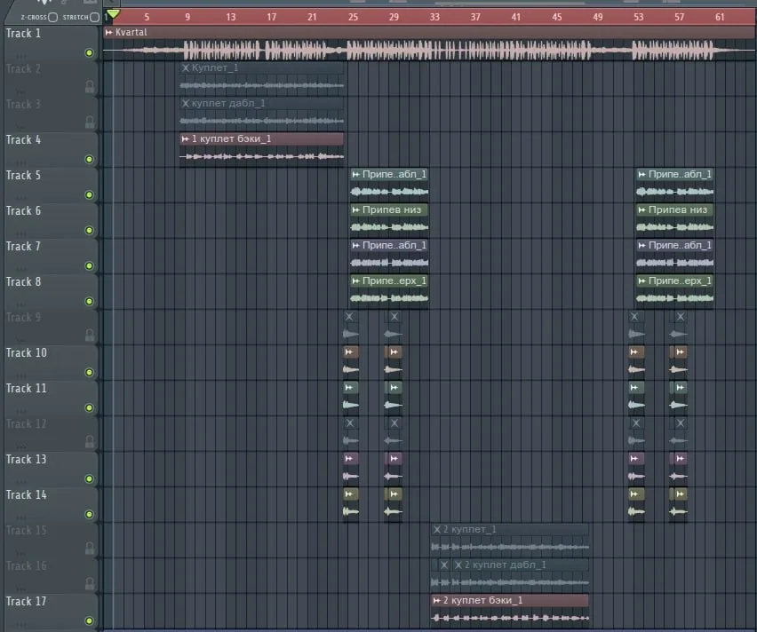

С чего начать: путь одного трека Where to start: the journey of one track
Трек от идеи до готового файла проходит четыре этапа. На каждом можно потерять деньги, время и качество — и почти всегда по одной причине: человек не знал, что именно на этом этапе важно.
A track goes through four stages from idea to finished file. At each one you can lose money, time and quality — almost always for the same reason: the person didn't know what mattered at that stage.
Эта база знаний собрана в том же порядке. Не нужно читать всё подряд: найдите свой этап и начните с него.
This knowledge base is arranged in the same order. You don't have to read it all: find your stage and start there.
Четыре этапа The four stages
- До записи. Комната, техника и настройки. Здесь решается больше половины итогового качества — и здесь же дешевле всего ошибиться: всё ещё можно переделать. Начните с «Домашняя студия с нуля», затем «Комната для записи» и «Настройка DAW».
- Запись. Голос и партии. Здесь ошибки уже не исправить, но их можно не допустить: «Как записывать вокал» и «Какие партии записывать».
- После записи. Чистка дублей и отправка проекта: «Что делать с дублями» и «Отправить трек на сведение».
- Сведение и мастеринг. То, за что нанимают звукорежиссёра, и то, что нельзя сделать за один вечер: «Сведение и мастеринг».
- Before recording. The room, the gear and the settings. More than half of the final quality is decided here — and this is the cheapest place to make a mistake, because everything can still be redone. Start with «A home studio from scratch», then «The recording room» and «Setting up your DAW».
- Recording. The voice and the parts. Mistakes made here can't be fixed later, but they can be avoided: «How to record vocals» and «Which parts to record».
- After recording. Cleaning up the takes and sending the project: «What to do with your takes» and «Sending a track for mixing».
- Mixing and mastering. What you hire a mixing engineer for, and what can't be done in one evening: «Mixing and mastering».
Если у вас всего час If you only have an hour
Три вещи, которые улучшат вашу запись сильнее любой покупки:
Three things that will improve your recording more than any purchase:
- Повесьте за спиной толстое одеяло и отодвиньте микрофон от стены — 15 минут.
- Поставьте в DAW 24 бита и пишите с пиками около −10 dBFSШкала цифрового уровня: 0 dBFS — предел, выше которого сигнал обрезается. — 5 минут.
- Проверьте, что поёте в правильную сторону микрофона и что в наушниках нет задержки — остальное время.
- Hang a thick duvet behind your back and move the microphone away from the wall — 15 minutes.
- Set 24 bit in your DAW and record with peaks around −10 dBFSThe digital level scale: 0 dBFS is the ceiling, above which the signal is clipped. — 5 minutes.
- Check that you are singing into the correct side of the microphone and that there is no latency in the headphones — the rest of the time.
Чего здесь нет What is not here
Эта база — про техническую сторону записи, а не про то, как писать песни. Здесь не будет уроков вокала, аранжировки и текстов: это отдельные большие области, и учиться им лучше у профильных преподавателей.
This knowledge base is about the technical side of recording, not about how to write songs. There will be no vocal, arrangement or lyric lessons here: those are separate large fields, and they are better learned from dedicated teachers.
Зато всё, что можно решить техникой и организацией, здесь разобрано: от расположения микрофона в комнате до того, какие файлы прислать звукорежиссёру, чтобы не платить за разбор архива.
Everything that can be solved with technique and organisation is covered here, though: from where the microphone stands in the room to which files to send the mixing engineer so that you don't pay for sorting out an archive.
Дальше. Если вы только начинаете, следующая остановка — «Домашняя студия с нуля». Если запись уже есть — «Отправить трек на сведение».
Next. If you are just starting out, the next stop is «A home studio from scratch». If you already have a recording — «Sending a track for mixing».
Домашняя студия с нуля: что купить и в каком порядке A home studio from scratch: what to buy and in what order
Домашняя студия — это не список техники, а очередь из четырёх решений. Кто покупает в правильном порядке, за те же деньги получает заметно лучше звук; кто покупает «как у всех» — потом докупает заново.
A home studio is not a gear list but a queue of four decisions. Buy in the right order and the same money gives you noticeably better sound; buy «what everyone buys» and you end up buying it again later.
Здесь — минимальный комплект, порядок покупок и то, на чём действительно можно сэкономить.
Here is the minimum kit, the order of purchases and what you can genuinely save on.
Минимальный комплект The minimum kit
Для вокальной записи нужны четыре вещи и ни одной больше:
Recording vocals needs four things, and not one more:
- Микрофон. Один, нормальный. Не «чем дороже, тем лучше», а «без явных дефектов»: ровный по верхам и без сильного гула.
- АудиоинтерфейсКоробочка между микрофоном и компьютером: усиливает сигнал, оцифровывает его и отдаёт звук в наушники. — то, что превращает голос в файл и даёт выход на наушники.
- Наушники. Закрытые: в них слышно себя и не слышно комнату.
- DAWПрограмма, в которой записывают и сводят: Ableton, Logic, FL Studio, Reaper, Cubase и другие. — программа, в которой вы записываете. Любая, в которой удобно.
- A microphone. One, a decent one. Not «the more expensive the better» but «without obvious flaws»: even on the top end and without a heavy rumble.
- An audio interfaceThe box between the microphone and the computer: it amplifies the signal, converts it to digital and feeds your headphones. — the thing that turns a voice into a file and gives you a headphone output.
- Headphones. Closed-back: you hear yourself and you don't hear the room.
- A DAWThe program where you record and mix: Ableton, Logic, FL Studio, Reaper, Cubase and others. — the program you record in. Any one you find comfortable.
Поп-фильтр, стойка, кабели — да, нужны. Но это расходники, а не выбор, поэтому в очередь покупок они не попадают.
A pop filter, a stand, cables — yes, you need those. But they are consumables rather than a choice, so they are not part of the buying queue.
Порядок покупок The order of purchases
Правило простое: сначала то, что слышно в каждой записи, потом то, что слышно иногда.
The rule is simple: first what is audible in every recording, then what is audible occasionally.
- Комната. Бесплатно или почти бесплатно: одеяла, мягкая мебель, правильное место в комнате. Влияет на запись сильнее любого микрофона — отдельная статья.
- Микрофон. Второе по влиянию. Здесь важнее тип и состояние, чем цена.
- Интерфейс. Дешёвый современный интерфейс пишет чисто. Дорогой нужен, когда нужны дополнительные входы, преампы получше и стабильные драйверы.
- Наушники. Их слышно не в записи, а в решениях: в плохих слышно не то, что в файле.
- The room. Free or almost free: duvets, soft furniture, the right spot in the room. It affects a recording more than any microphone — a separate article.
- The microphone. Second in influence. Type and condition matter more here than price.
- The interface. A cheap modern interface records cleanly. An expensive one is needed when you need more inputs, better preamps and stable drivers.
- Headphones. You hear them not in the recording but in the decisions: with bad ones you hear something other than what is in the file.
Куда всё поставить Where to put it all
Даже идеальный микрофон в неудачном месте звучит хуже дешёвого в удачном. Четыре правила, которые работают в любой комнате:
Even a perfect microphone in a bad spot sounds worse than a cheap one in a good spot. Four rules that work in any room:
- Не в угол и не в центр. В углу скапливается низ, в центре комнаты — самое заметное эхо. Ищите точку между ними, ближе к мягкой мебели.
- За спиной — что-то мягкое. Одеяло, шкаф с одеждой, диван. Отражения приходят сзади, а не спереди.
- Стол — не впритык к стене. Голая стена за монитором даёт отражения прямо в микрофон. Десять сантиметров отступа уже помогают.
- Мониторы — по правилу треугольника. Колонки и голова образуют равносторонний треугольник, твитеры на уровне ушей, колонки симметрично от центра стола.
- Not in a corner, not in the centre. The low end piles up in corners, while the centre of the room has the most noticeable echo. Look for a spot between them, closer to soft furniture.
- Something soft behind your back. A duvet, a wardrobe full of clothes, a sofa. Reflections come from behind, not from the front.
- The desk — not flush against the wall. A bare wall behind your monitor reflects straight into the microphone. Ten centimetres of clearance already helps.
- Monitors — by the triangle rule. The speakers and your head form an equilateral triangle, the tweeters at ear level, the speakers symmetrical about the centre of the desk.
Мониторы при записи не нужны вообще — они нужны, когда вы слушаете результат. Если места мало, сначала разберитесь с микрофоном, а колонки поставьте по этим четырём правилам.
You don't need monitors for recording at all — you need them when you listen to the result. If space is tight, sort out the microphone first, then place the speakers by those four rules.
На чём можно сэкономить Where you can save
- На интерфейсе — спокойно. Разница между дешёвым и дорогим слышна в основном в количестве входов и удобстве, а не в «качестве звука».
- На «студийном» микрофоне. Дорогой микрофон в комнате без обработки не даёт преимущества: он честнее показывает то, что комната портит.
- На кабелях — в разумных пределах. Кабель за большие деньги не улучшает звук. Кабель, который трещит, — ухудшает.
- На софте. В любой DAW есть эквалайзер, компрессор и реверб. Докупать плагины на старте не нужно.
- On the interface — absolutely. The difference between a cheap and an expensive one is mostly the number of inputs and convenience, not «sound quality».
- On a «studio» microphone. An expensive microphone in an untreated room gives no advantage: it just shows more honestly what the room is ruining.
- On cables — within reason. An expensive cable does not improve the sound. A cable that crackles does make it worse.
- On software. Every DAW has an EQ, a compressor and a reverb. You don't need to buy plug-ins at the start.
И наоборот: на комнате экономить нельзя, потому что её «покупка» — это время, а не деньги. Час, потраченный на перестановку и одеяла, даёт больше, чем следующий апгрейд техники.
And the other way round: you can't save on the room, because «buying» it costs time rather than money. An hour spent on rearranging and duvets gives more than the next gear upgrade.
Дальше. Следующий шаг — разобраться с комнатой: «Комната для записи». Затем настройки: «Настройка DAW».
Next. The next step is the room: «The recording room». Then the settings: «Setting up your DAW».
Комната для записи: что работает, а что миф The recording room: what works and what is a myth
Комната — самый дешёвый и самый недооценённый инструмент домашней студии. Она влияет на запись сильнее микрофона и преампа вместе взятых, а большая часть «плохого домашнего звука» — это не техника, а комната.
The room is the cheapest and most underrated tool in a home studio. It affects a recording more than a microphone and a preamp put together, and most of «bad home sound» is not the gear but the room.
Хорошая новость: почти всё, что нужно, делается бесплатно и без ремонта. Плохая — придётся переставить мебель и отказаться от пары популярных советов.
The good news: almost everything you need is free and needs no renovation. The bad news: you will have to move some furniture and give up a couple of popular tips.
Что слышит микрофон What the microphone hears
Когда вы поёте, в микрофон приходят три вещи:
When you sing, three things arrive at the microphone:
- Прямой звук — то, что летит от вас прямо в капсюль. Это и нужно.
- Ранние отраженияЗвук, который долетел до стены или стола и вернулся в микрофон раньше, чем вы успели это осознать. Он склеивается с голосом и даёт «коробочный» оттенок. — звук, вернувшийся от стен, потолка и стола. Они «склеиваются» с голосом и дают тот самый оттенок «коробки» и «бубнежа».
- Хвост комнаты — эхо, которое вы слышите, если хлопнуть в ладоши.
- Direct sound — what flies from you straight into the capsule. That is what you need.
- Early reflectionsSound that reached a wall or a desk and came back into the microphone. It glues itself to the voice and gives that «boxy» tint. — sound coming back from the walls, the ceiling and the desk. They «glue» themselves to the voice and give that «boxy», «mumbling» tint.
- The room tail — the echo you hear when you clap your hands.
Задача обустройства: убрать второе и третье, не убив первое. Всё остальное — детали.
The task of treating a room: remove the second and the third without killing the first. Everything else is detail.
Три принципа Three principles
Толщина важнее площади. Тонкий поролон в 1–3 см убирает только верх: «воздух» и «искру» вы теряете, а гул и низкую середину оставляете. Получается глухой и одновременно бубнящий звук — из-за него люди разочаровываются в акустической обработке. Чтобы работать с низом, нужна толщина от 5–10 см и лучше с воздушным зазором от стены.
Thickness matters more than area. Foam 1–3 cm thick removes only the top end: you lose the «air» and the «sparkle» but keep the boom and the low mids. The result is dull and boomy at the same time — the very thing that makes people give up on acoustic treatment. To work with the low end you need 5–10 cm of thickness, and better with an air gap from the wall.
Место важнее количества. Два правильно повешенных одеяла дадут больше, чем десять панелей в случайных местах. Для вокала важны три точки: за спиной поющего, над головой и за микрофоном.
Position matters more than quantity. Two correctly hung duvets do more than ten panels in random spots. For vocals three points matter: behind the singer's back, above the head and behind the microphone.
Не создавайте маленький замкнутый объём. Шкаф с одеждой, «мини-будка» из поролона, коробка вокруг микрофона — это не комната для вокала. У маленького замкнутого объёма свои резонансы в низкой середине, и голос звучит «изнутри ящика».
Don't build a small sealed volume. A wardrobe full of clothes, a foam «mini booth», a box around the microphone — none of these is a vocal room. A small sealed volume has its own resonances in the low mids, and the voice sounds like «the inside of a box».
Три уровня: от бесплатного к платному Three levels: from free to paid
Уровень 0 — ничего не покупать. Выберите комнату побольше и с мягкой мебелью: не ванную, не шкаф, не кладовку. Не ставьте микрофон в угол и не пойте в центр комнаты. Разверните себя так, чтобы за спиной было что-то мягкое.
Level 0 — buy nothing. Choose the bigger room with soft furniture: not the bathroom, not a wardrobe, not a closet. Don't put the microphone in a corner and don't sing in the centre of the room. Turn so that there is something soft behind your back.
Уровень 1 — одеяла. Пуховое одеяло за спиной — самое эффективное бесплатное улучшение. Второе — над головой или за микрофоном. Важно: одеяло должно быть толстым и висеть с зазором от стены, а не прижатым к ней.
Level 1 — duvets. A duvet behind your back is the single most effective free improvement. The second one goes above your head or behind the microphone. Important: the duvet must be thick and must hang with a gap from the wall, not pressed against it.
Уровень 2 — панели. ПоглотительПанель из пористого материала в жёсткой рамке: гасит отражения, а не «украшает» стену. Работает толщиной, а не картинкой. из пористого материала в жёсткой рамке — это уже не подручные средства, а покупка. Минимум для вокала: две панели за спиной и одна над головой. Дешёвый вариант — те же одеяла, но натянутые ровно и с зазором.
Level 2 — panels. An absorberA panel of porous material in a rigid frame: it kills reflections rather than decorating the wall. It works by thickness, not by the picture on it. made of porous material in a rigid frame is a purchase rather than a makeshift fix. The minimum for vocals: two panels behind your back and one above your head. The cheap version is the same duvets, but stretched flat and with an air gap.
Что не работает What doesn't work
- Тонкий поролон на все стены маленькой комнаты. Худший вариант: низ усилился, верх умер, вокал умер. Привет продавцам «вокальных будок».
- Акустический экран за микрофоном. Он стоит не с той стороны: кардиоидный микрофон почти не слышит то, что за ним, а отражения приходят от стены за вашей спиной. Если экран уже есть — запишите фразу с ним и без: часто «без» живее.
- Ковёр на стене вместо всего остального. Ковёр помогает от «звона» на верхах, но не от гула. Один ковёр не заменяет толщу за спиной.
- Thin foam on every wall of a small room. The worst option: the low end got louder, the top end died, the vocal died. Greetings to the people who sell «vocal booths».
- An acoustic screen behind the microphone. It sits on the wrong side: a cardioid microphone barely hears what is behind it, while the reflections come from the wall behind your back. If you already own one, record a phrase with it and without it: often the «without» version is livelier.
- A rug on the wall instead of everything else. A rug helps with the «ringing» on the top end, but not with the boom. One rug does not replace thickness behind your back.
Проверка за пять минут Checking in five minutes
- Хлопните в ладоши там, где собираетесь петь. Быстрое «дзынь» с дребезгом — флаттерБыстрое металлическое дребезжание между двумя параллельными голыми стенами: звук «бегает» туда-сюда. — параллельные голые стены. Гулкий «бум» — мало поглощено низа.
- Запишите десять секунд тишины и послушайте в наушниках громче обычного: услышите то, чего не слышали ушами.
- Запишите одну фразу в трёх точках комнаты — у стены, в центре, рядом с шкафом. Разница удивит, и лучшая точка найдётся без единой покупки.
- Clap your hands where you are going to sing. A fast «ping» with a rattle means flutterA fast metallic rattle between two parallel bare walls: the sound bounces back and forth. — parallel bare walls. A boomy «boom» means too little low end is absorbed.
- Record ten seconds of silence and listen to it in headphones louder than usual: you will hear what your ears did not.
- Record one phrase in three spots — by the wall, in the centre, next to the wardrobe. The difference will surprise you, and the best spot will be found without buying a thing.
Источники Sources
- Sound On Sound — «How To Set Up A Home Studio» — soundonsound.com/techniques/how-set-up-home-studio
- GIK Acoustics — образовательные статьи по акустике — gikacoustics.com/articles
- RealTraps — «Acoustics FAQ» (Ethan Winer) — realtraps.com/faq.htm
Дальше. Комната готова — переходите к настройкам: «Настройка DAW». Или сразу к записи: «Как записывать вокал».
Next. The room is ready — move on to the settings: «Setting up your DAW». Or straight to recording: «How to record vocals».
Настройка DAW перед записью Setting up your DAW before recording
Половина «плохих записей» приходит не из-за микрофона, а из-за настроек, которые никто не проверил. Это пять пунктов на десять минут — и они снимают почти все технические сюрпризы.
Half of «bad recordings» come not from the microphone but from settings nobody checked. These are five points worth ten minutes, and they remove almost every technical surprise.
Разрядность и частота проекта Bit depth and sample rate
Пишите в 24 бита. Это тот запас, из-за которого не нужно «писать погромче, чтобы не было шума»: тихая запись в 24 битах всё равно содержит больше данных, чем громкая в 16.
Record at 24 bit. This is the headroom that makes «record louder so there's no noise» unnecessary: a quiet 24-bit recording still holds more data than a loud 16-bit one.
Частоту берите 44,1 или 48 кГц — ту же, что в проекте у битмейкера. Пересэмплирование туда-обратно не улучшает ничего, а путаницу создаёт постоянно.
Choose 44.1 or 48 kHz — the same rate as in the beatmaker's project. Resampling back and forth improves nothing and constantly creates confusion.
Буфер и задержка Buffer and latency
БуферРазмер порции звука, которую компьютер обрабатывает за раз. Меньше буфер — меньше задержка, но выше нагрузка на процессор. — это компромисс: меньше значение — меньше задержкаВремя между вашим «а» и звуком в наушниках. Слышимая задержка мешает петь: голос двоится., но процессор успевает меньше.
The bufferHow much audio the computer processes at a time. A smaller buffer means less latency but more load on the CPU. is a trade-off: a smaller value means less latencyThe delay between your «a» and the sound in the headphones. Audible latency makes singing hard: your voice doubles. but also less processing headroom.
На время записи ставьте буфер поменьше (обычно 128–256 сэмплов). Если слышите, что голос в наушниках «догоняет» вас — либо уменьшайте буфер, либо включайте прямой мониторингТо, как вы слышите себя во время записи: через программу (с обработкой) или напрямую через интерфейс (без задержки). на самом интерфейсе.
While recording, keep the buffer small (usually 128–256 samples). If your voice in the headphones seems to «chase» you — either lower the buffer or switch on direct monitoringHow you hear yourself while recording: through the program (with processing) or directly through the interface (without latency). on the interface itself.
Важная деталь: прямой мониторинг идёт в обход программы, поэтому обработку вы при этом не слышите. Это нормально — обработка в наушниках нужна для комфорта, а в файл всё равно пишется чистый сигнал.
One important detail: direct monitoring goes around the program, so you don't hear the processing that way. That is fine — processing in the headphones is for comfort, while the file gets the clean signal either way.
Уровни и запас Levels and headroom
Ориентир: пики около −10 dBFS. Это не «тихо» — это запас на случай, если на эмоциях вы споёте громче, чем на саундчеке.
The target: peaks around −10 dBFS. That is not «quiet» — it is headroom in case you sing louder with emotion than you did during the soundcheck.
- Саундчек делайте на самых громких фразах песни, а не на «ля-ля».
- ГейнРегулятор усиления на интерфейсе: сколько сигнала снимается с микрофона до записи. ставьте по громкому месту — тихое потом легко поднять.
- Если слышите искажения, а индикаторы не в красном — перегружен вход интерфейса. Убавьте гейн, а не «лечите» это в программе.
- Красный индикатор — это уже клиппингСигнал упёрся в предел шкалы и был обрезан. Восстановить это нельзя — только переписать.: такой фрагмент не восстанавливается, только переписывается.
- Do the soundcheck on the loudest phrases of the song, not on «la-la».
- Set the gainThe amplification knob on the interface: how much signal is taken from the microphone before recording. by the loud part — the quiet part is easy to lift later.
- If you hear distortion while the meters are not in the red, the interface input is overloading. Lower the gain instead of «fixing» it in the program.
- A red meter means clippingThe signal hit the top of the scale and was cut off. It cannot be restored — only re-recorded.: that fragment cannot be restored, only re-recorded.
Что проверить один раз What to check once
- Плагины не попадают в файл. В подавляющем большинстве DAW обработка на дорожке слышна, но в запись не пишется. Не верьте на слово: запишите пару фраз с включённым плагином и послушайте результат в соло.
- Запись идёт в нужную дорожку и в нужную папку. Проект с настройками сохранения лучше проверить до дубля, а не после него.
- Проект сохраняется. Один раз нажмите «Сохранить как» и назовите файл по-человечески: «Трек_вокал_дата», а не «Untitled 3».
- Хвост записи не обрезан. Оставьте пару секунд после последней ноты: в этих секундах живёт естественный хвост комнаты.
- Plug-ins don't reach the file. In the vast majority of DAWs processing on the track is audible but is not recorded. Don't take it on faith: record a couple of phrases with a plug-in on and listen back in solo.
- You are recording into the right track and the right folder. Better to check project save settings before a take than after it.
- The project saves. Do «Save As» once and give the file a human name: «Track_vocal_date», not «Untitled 3».
- The tail is not cut off. Leave a couple of seconds after the last note: the natural room tail lives in those seconds.
Дальше. Настройки готовы — можно петь: «Как записывать вокал». Если не уверены, какие партии нужны, — «Какие партии записывать».
Next. The settings are ready — time to sing: «How to record vocals». If you are not sure which parts you need — «Which parts to record».
Как записывать вокал дома How to record vocals at home
Я звукорежиссёр, и большую часть вокала, который мне приносят, приходится спасать: перезаписать невозможно, а вычищать долго и дорого. Почти все эти проблемы — не из-за дешёвого микрофона, а из-за нескольких мелочей, которые человек просто не знал.
I'm a mixing engineer, and most of the vocals that come to me have to be rescued: re-recording is impossible, cleaning up takes time and money. Almost all of those problems come not from a cheap microphone but from a few small things the singer simply didn't know.
Хорошая новость: почти всё решается до нажатия Record — голосом, микрофоном, поведением у микрофона и наушниками.
The good news: almost everything is decided before you hit Record — by the voice, the microphone, how you behave at the mic and the headphones.
Голос перед записью The voice before recording
Никакой микрофон не спасёт неподготовленный голос, а уставший испортит даже идеальную запись.
No microphone will save an unprepared voice, while a tired voice will ruin even a perfect recording.
- Разомнитесь. 5–10 минут: дыхание, артикуляция, резонанс, расслабление. Не переусердствуйте — усталость слышна на записи отчётливее, чем кажется.
- Пейте воду. Всё, что сушит (кофе, чай, кола, алкоголь), и всё, что оставляет налёт (молочка), — против вас. Тёплый чай с лимоном и имбирём заметно уменьшает губные щелчки.
- Не пойте песню двадцать раз «на черновик». К моменту настоящей записи голос уже уставший. Черновой прогон — один, максимум два.
- Warm up. 5–10 minutes: breathing, articulation, resonance, relaxing. Don't overdo it — tiredness is more audible on the recording than you think.
- Drink water. Everything that dries you out (coffee, tea, cola, alcohol) and everything that leaves a film (dairy) works against you. Warm tea with lemon and ginger noticeably reduces lip clicks.
- Don't sing the song twenty times «as a demo». By the time you record for real, the voice is already tired. One run-through, two at most.
Микрофон: сторона и расстояние The microphone: side and distance
Первое, что стоит проверить: в какую сторону вы поёте. У динамических микрофонов капсюльТа часть микрофона, которая принимает звук. У динамического она в торце, у конденсаторного — сбоку, там, где логотип. смотрит в торец, у конденсаторных — в бок, туда, где логотип. Перепутать сторону — самая частая и самая обидная ошибка: голос записывается глухим и тихим, а человек идёт покупать новый микрофон.
The first thing to check: which side you are singing into. Dynamic microphones have the capsuleThe part of the microphone that picks up sound. On a dynamic mic it is at the end, on a condenser it is at the side, where the logo is. at the end, condenser ones — at the side, where the logo is. Singing into the wrong side is the most common and most annoying mistake: the voice comes out dull and quiet, and the singer goes off to buy a new microphone.
Дистанция — 15–16 см и поп-фильтрСетка перед микрофоном: гасит взрывные «п» и «б», которые не слышны на слух, но перегружают запись. между вами и капсюлем. Ближе — громче и «жирнее», но появляется эффект близостиПодъём низа, когда поют вплотную к микрофону. Иногда это приём, но чаще — бубнёж, который потом не убрать. и щелчки. Дальше — тише и «комнатнее».
Distance — 15–16 cm with a pop filterThe mesh in front of the microphone: it tames the plosive «p» and «b» sounds that overload the recording. between you and the capsule. Closer means louder and «fatter», but you get the proximity effectThe low-end boost you get when singing right up against the microphone. Sometimes a technique, more often boom you cannot remove later. and clicks. Farther means quieter and more «roomy».
Практика: выберите дистанцию ладонью — приложите руку к микрофону, и пусть ладонь будет «линейкой». Меняя дистанцию посреди дубля, вы меняете тембр, и склеить такой дубль почти невозможно.
A practical trick: measure the distance with your hand — hold your palm to the microphone and use it as a «ruler». Changing the distance mid-take changes the timbre, and such a take is almost impossible to splice.
Как вести себя у микрофона How to behave at the microphone
- Не зажимайтесь и не «выпрямляйтесь в струнку». Тело свободнее — голос свободнее. Если приходится тянуться к микрофону, лучше поднять стойку.
- Смотрите не в микрофон, а мимо. Когда человек смотрит в капсюль, он поёт «в него» и теряет опору. Отведите взгляд в сторону — звук станет ровнее.
- Держите дистанцию на громких нотах. Естественный рефлекс — отклониться или, наоборот, прижаться. Отклоняйтесь: лучше чуть дальше, чем перегруз.
- Посторонние звуки тоже пишутся. Скрип стула, цепочка, телефон, шаги, скрип кресла. Всё это вырезается, но время на это уходит ваше.
- Don't tense up and don't «stand to attention». A freer body means a freer voice. If you have to reach for the microphone, raise the stand instead.
- Look past the microphone, not at it. When people stare into the capsule they sing «into it» and lose support. Look aside — the sound becomes more even.
- Keep your distance on loud notes. The reflex is either to pull back or to lean in. Pull back: a little farther is better than overloading.
- Stray sounds get recorded too. A creaking chair, a chain, a phone, footsteps. All of it can be cut out, but it costs your time.
Наушники и обработка в них Headphones and the processing in them
В наушниках нужен микс, в котором удобно петь, а не тот, который красив. Часто это значит: больше инструмента, меньше реверба, ваш голос чуть громче. Если вы не слышите себя — вы будете петь громче и хуже.
The headphones need a mix that is comfortable to sing with, not one that is beautiful. Often that means: more instrumental, less reverb, your voice a little louder. If you can't hear yourself, you will sing louder and worse.
Обработка в наушниках (компрессор, реверб) — это только для комфорта: в файл она не пишется. Стоит включить, если без неё голос кажется «голым» и вы зажимаетесь. Но помните: то, что вы слышите, и то, что получит звукорежиссёр, — разные вещи.
Processing in the headphones (a compressor, a reverb) is for comfort only: it doesn't go into the file. It is worth switching on if the voice feels «naked» without it and you tense up. But remember: what you hear and what the engineer gets are two different things.
И обязательно проверьте, что из наушников не течёт звук в микрофон. Наденьте наушники на микрофон (или включите минус громко) и запишите тишину: если на записи слышен бит — он будет слышен и в вокале.
And do check that no sound leaks from the headphones into the microphone. Put the headphones over the microphone (or play the instrumental loud) and record silence: if the beat is on the recording, it will be in the vocal too.
Как записывать себя How to record yourself
Когда вы одновременно поёте и жмёте Record, часть внимания уходит на кнопки — и это слышно. Три приёма, которые помогают:
When you sing and press Record at the same time, part of your attention goes to the buttons — and it shows. Three tricks that help:
- Пишите циклами. Включите запись на весь припев и спойте его 4–6 раз подряд. Одна «удачная» строчка почти всегда найдётся, а ощущение непрерывности останется.
- Считайте вслух перед первой нотой. «Раз-два-три-четыре» — потом это легко вырезать, а старт получится точным.
- Не останавливайтесь на ошибке. Допевайте фразу до конца: обрыв посреди слова — это ещё и потерянный дубль.
- Record in loops. Arm recording for the whole chorus and sing it 4–6 times in a row. One good line almost always shows up, and the sense of continuity stays.
- Count out loud before the first note. «One-two-three-four» is easy to cut later, and the entrance will be precise.
- Don't stop at a mistake. Finish the phrase: a break in the middle of a word also costs you a take.
Чек-лист перед Record Checklist before Record
- Голос разогрет, вода рядом, телефон в авиарежиме.
- Правильная сторона микрофона, дистанция 15–16 см, поп-фильтр на месте.
- Пики около −10 dBFS на самых громких фразах.
- В наушниках удобный микс, задержки нет, звук из них не течёт в микрофон.
- Окно закрыто, чайник выключен, домашние предупреждены.
- The voice is warm, water is nearby, the phone is in airplane mode.
- The correct side of the microphone, 15–16 cm distance, the pop filter in place.
- Peaks around −10 dBFS on the loudest phrases.
- A comfortable mix in the headphones, no latency, no leakage into the microphone.
- The window is shut, the kettle is off, the household has been warned.
Если после записи остались сомнения — присылайте дубли, разберёмся. А как подготовить проект к сведению, чтобы не платить за лишнюю работу, — в статье «Отправить трек на сведение».
If doubts remain after the recording, send the takes over and we'll sort it out. And to learn how to prepare a project for mixing so you don't pay for extra work, see «Sending a track for mixing».
Дальше. Какие ещё партии нужны песне и сколько дублей писать — «Какие партии записывать».
Next. Which other parts the song needs and how many takes to record — «Which parts to record».
Какие партии записывать и сколько дублей Which parts to record and how many takes
Песня почти никогда не состоит из одного вокала. Даже «простая» поп-песня — это лид, его дубли в припеве, бэки, эд-либы и, если повезёт, пара «шумовых» слоёв.
A song almost never consists of a single vocal. Even a «simple» pop song is a lead, its doubles in the chorus, backing vocals, ad-libs and, if you are lucky, a couple of «noise» layers.
Вот минимальный набор, с которым звукорежиссёру уже есть что сводить, и правила, которые избавят от перезаписи.
Here is the minimum set that gives a mixing engineer something to work with, and the rules that will save you a re-record.
Четыре роли Four roles
Лид-вокалГлавная вокальная партия: то, что слушатель считает «голосом песни». Всегда один слой. — главная партия, один слой. Пишется первым и целиком, от начала до конца, даже если кажется, что куплет «и так сойдёт».
The lead vocalThe main vocal part: what the listener hears as «the voice of the song». Always a single layer. — the main part, one layer. Record it first and in full, even if the verse seems «fine as it is».
ДаблВторой дубль той же партии, спетый заново. Вместе с лидом даёт ширину и плотность — но только если спет отдельно, а не скопирован. — та же партия, спетая заново. Обычно в припеве, иногда в куплете. Важно: дабл — это отдельный дубль, а не копия дорожки. Копия звучит громче, а не шире.
A doubleA second take of the same part, sung again from scratch. With the lead it gives width and density — but only if recorded separately, not copied. — the same part sung again. Usually in the chorus, sometimes in a verse. Important: a double is a separate take, not a copy of the track. A copy sounds louder, not wider.
БэкиПодпевки: гармонии, «о-о», «эй». Их может быть от двух дорожек до десяти, и они держат припев. — подпевки и гармонии. Достаточно двух-трёх дорожек: терция, квинта, октава. Именно они делают припев «большим», а не громкость лида.
Backing vocalsHarmonies and «oh-oh», «hey» lines. There can be two tracks or ten, and they are what holds a chorus up. — harmonies and «oohs». Two or three tracks are enough: a third, a fifth, an octave. They are what makes a chorus «big», not the loudness of the lead.
Эд-либыКороткие вставки между фразами: «эй», «да», вздохи, вокализы. Их всегда больше, чем кажется нужным: лишнее легко выключить. — короткие вставки между фразами. Записывайте с запасом: лишнее легко выключить, а недостающее — только дописывать.
Ad-libsShort interjections between phrases: «hey», «yeah», sighs, vocal runs. Always record more than you think you need: extra is easy to mute. — short interjections between phrases. Record more than you think you need: extra is easy to mute, missing ones can only be added later.
Сколько дублей писать How many takes to record
Ориентир, который экономит время и нервы: 3 полных дубля лида и по 2 дубля на каждую роль. Из трёх полных почти всегда собирается один идеальный — это работа звукорежиссёра, а не ваша.
A benchmark that saves time and nerves: 3 full takes of the lead and 2 takes for each additional role. Three full takes almost always yield one perfect one — that is the engineer's job, not yours.
- Дубль — не «перепеть, пока не станет идеально». Пять дублей подряд звучат всё более устало, а не всё лучше.
- Не бросайте дубль на середине. Допевайте: половина дубля часто оказывается лучшей.
- Бэки пишите отдельными дорожками, а не все сразу в один микрофон: сводить их потом можно как угодно.
- A take is not «sing it again until it's perfect». Five takes in a row sound more and more tired, not better and better.
- Don't abandon a take halfway. Finish it: half a take often turns out to be the best one.
- Record backing vocals on separate tracks, not all at once into one microphone: then they can be mixed any way you like.
Как разложить в проекте How to lay it out in the project
Дорожки лучше называть сразу и по-человечески. Это не педантизм: звукорежиссёр открывает проект и первые минуты тратит на то, чтобы понять, где что. Чем понятнее названия, тем меньше вы платите за разбор.
Name the tracks right away, in plain words. This is not pedantry: the engineer opens the project and spends the first minutes working out what is where. The clearer the names, the less you pay for sorting things out.

Схема имени: часть_роль_номер. Например chorus_lead_1, chorus_double_2, verse_back_3. Скучно — зато через месяц вы сами поймёте, что где.
The naming scheme: part_role_number. For example chorus_lead_1, chorus_double_2, verse_back_3. Dull — but in a month you will still know what is where.
Чего не делать What not to do
- Не копируйте лид вместо дабла. Копия даёт громче, а не шире, и на моно-проверке просто исчезает.
- Не пишите все бэки в один дубль «хором». Так не сделать ни баланс, ни панораму.
- Не оставляйте в проекте двадцать неиспользованных дорожек без названий. Это время звукорежиссёра, то есть ваши деньги.
- Не «улучшайте» вокал питчем и таймингом до сведения. Сначала покажите живой материал: часто правится не то, что кажется.
- Don't copy the lead instead of doubling it. A copy is louder, not wider, and it simply disappears in a mono check.
- Don't record all backing vocals in one «choir» take. That gives you neither balance nor panning.
- Don't leave twenty unnamed unused tracks in the project. That is the engineer's time, which means your money.
- Don't «improve» the vocal with pitch and timing before mixing. Show the living material first: often the thing that needs fixing is not what seems wrong.
Дальше. Дубли записаны — пора их чистить и склеивать: «Что делать с дублями».
Next. The takes are recorded — time to clean and splice them: «What to do with your takes».
Что делать с дублями: чистка и компинг What to do with your takes: cleaning and comping
Дубли записаны — теперь из них нужно собрать один вокал. Это самая механическая часть работы: никакого творчества, только внимательность. И именно здесь чаще всего портят то, что было записано хорошо.
The takes are recorded — now one vocal has to be assembled out of them. This is the most mechanical part of the work: no creativity, only attention. And this is exactly where people most often ruin what was recorded well.
Сначала послушайте себя First, listen to yourself
Первое прослушивание — самое неприятное и самое полезное. Слушайте не «нравится / не нравится», а по конкретным признакам:
The first listen is the most unpleasant and the most useful. Listen not for «I like it / I don't», but for specific signs:
- Где голос «проваливается» — там, скорее всего, кончился воздух или вы перенапряглись.
- Где слышны щелчки и взрывы «п»/«б» — это лечится точечно, не «всем треком».
- Где вы «съезжаете» по интонации — это правится выбором другого дубля, а не питчем.
- Где слышно комнату — гулкий «хвост» после фраз. Его лучше не маскировать, а вырезать.
- Where the voice «sags» — most likely you ran out of air or tensed up.
- Where clicks and «p»/«b» pops are audible — these are fixed point by point, not «across the whole track».
- Where the pitch drifts — fix that by choosing another take, not with pitch correction.
- Where the room is audible — a boomy «tail» after phrases. Better to cut it than to mask it.
Чистка Cleaning
Порядок такой: сначала уберите всё лишнее, потом собирайте. Иначе придётся переделывать склейки.
The order: remove everything unnecessary first, then assemble. Otherwise you will have to redo the splices.
- Паузы между дублями — вырежьте, оставив по 100–200 мс до и после.
- Вдохи — не удаляйте все подряд: часть вдохов делает вокал живым. Убирайте громкие и «свистящие».
- Щелчки и призвуки — точечно, коротким фейдом, а не эквалайзером.
- Шум в паузах — если он ровный, аккуратный шумодав справится. Если шум «плавает», лучше оставить как есть.
- The gaps between takes — cut them out, leaving 100–200 ms before and after.
- Breaths — don't remove them all: some breaths keep a vocal alive. Remove the loud and «whistling» ones.
- Clicks and artefacts — point by point, with a short fade, not with an EQ.
- Noise in the gaps — if it is even, a careful noise reducer will handle it. If the noise «swims», better leave it as it is.
Компинг Comping
КомпингСборка одного вокала из лучших кусков разных дублей. От английского «comp» — «составлять». — это сборка одного вокала из лучших кусков разных дублей. Техника простая: резать по паузам и включать нужный дубль на нужном участке.
CompingBuilding one vocal out of the best pieces of several takes. Short for «compiling». means building one vocal out of the best pieces of different takes. The technique is simple: cut at pauses and switch to the right take for the right section.
- Режьте по тишине, а не посреди слова: иначе слышен «шов».
- Ставьте короткие кроссфейды на стыках — 5–15 мс достаточно.
- Не смешивайте два дубля одновременно в одном месте: получится «двойной голос» и фазовые проблемы.
- Оставляйте по 2–3 дубля на участок до самого конца: решение может измениться, когда вы услышите вокал в миксе.
- Cut at silence, not in the middle of a word: otherwise the «seam» is audible.
- Use short crossfades at the joins — 5–15 ms is enough.
- Don't blend two takes at once in the same spot: you get a «double voice» and phase problems.
- Keep 2–3 takes per section until the very end: your decision may change once you hear the vocal in the mix.
Минимум обработки The minimum of processing
Вокал, который пойдёт на сведение, лучше не обрабатывать вовсе — звукорежиссёр сделает это точнее. Если очень хочется, ограничьтесь тремя вещами:
A vocal that is going to be mixed is best left unprocessed — the engineer will do it more precisely. If you really want to, limit yourself to three things:
- Срез низа — всё ниже 60–80 Гц в голосе почти всегда мусор: гул комнаты и руки.
- Лёгкая компрессияПрибор, который выравнивает громкость: громкие места делает тише, тихие громче. — 2–3 дБ, чтобы просто выровнять громкие и тихие фразы.
- Де-эссерПрибор, который приглушает резкие «с» и «ш», не убирая остальные верхи. — если «с» и «ш» режут слух.
- A low cut — everything below 60–80 Hz in a voice is almost always rubbish: room rumble and handling noise.
- Light compressionA tool that evens out loudness: it makes loud parts quieter and quiet parts louder. — 2–3 dB, just to even out loud and quiet phrases.
- A de-esserA tool that tames harsh «s» and «sh» sounds without removing the rest of the top end. — if the «s» and «sh» sounds are harsh.
Реверб, сатурацию и «клей» оставьте тому, кто будет сводить: их нельзя отменить после экспорта.
Leave the reverb, saturation and «glue» to whoever mixes the track: they can't be undone after export.
Чего не делать What not to do
- Не удаляйте дубли сразу. «Плохой» дубль часто содержит лучшую фразу. Удалять — только после сведения.
- Не «спасайте» вокал эквалайзером. Если голос звучит глухо, дело было в микрофоне и комнате, а не в частотах.
- Не выравнивайте всё по сетке. Ровный до миллисекунды вокал теряет дыхание и звучит как синтезатор.
- Не сводите на телефоне или в наушниках «для созвона». Вы услышите не микс, а себя в миске.
- Don't delete takes right away. A «bad» take often contains the best phrase. Delete only after mixing.
- Don't «rescue» a vocal with an EQ. If the voice sounds dull, the cause was the microphone and the room, not the frequencies.
- Don't snap everything to the grid. A vocal that is perfectly on time loses its breath and sounds like a synth.
- Don't mix on a phone or on call-centre earbuds. You will hear yourself in a bowl, not a mix.
Если после чистки вы не уверены, что делать дальше, — присылайте проект: разберу и скажу, что стоит поправить до сведения. Как его правильно собрать, — в статье «Отправить трек на сведение».
If you are not sure what to do next after cleaning up, send the project over: I'll go through it and tell you what is worth fixing before mixing. How to prepare it properly is in «Sending a track for mixing».
Дальше. Проект собран — узнайте, какие файлы нужны звукорежиссёру: «Отправить трек на сведение».
Next. The project is assembled — find out which files the engineer needs: «Sending a track for mixing».
Отправить трек на сведение: что и как экспортировать Sending a track for mixing: what to export and how
Половина вопросов «а почему так дорого» решается на этом этапе. Если звукорежиссёр получает аккуратный набор файлов, он сразу начинает сводить, а не разбирать архив. Если нет — вы платите за разбор.
Half of the «why is it so expensive» questions are answered at this stage. If the engineer gets a tidy set of files, they start mixing right away instead of unpacking an archive. If not, you pay for the unpacking.
Формат файлов File format
- WAV, 24 бита. Не mp3, не «ссылкой на облако с плеером», не m4a из телефона.
- Та же частота, что в проекте — 44,1 или 48 кГц. Не пересэмплируйте «для порядка».
- СтемыОтдельные дорожки проекта, экспортированные каждая в свой файл: вокал, бэки, бас, барабаны. — отдельными файлами, а не один микс.
- Один файл — одна дорожка. Всё с начала песни, одинаковой длины: так их можно выстроить и не искать, где что начинается.
- WAV, 24 bit. Not mp3, not «a link to a cloud player», not m4a from a phone.
- The same sample rate as the project — 44.1 or 48 kHz. Don't resample «to be tidy».
- StemsThe separate tracks of a project, each exported to its own file: vocals, backing vocals, bass, drums. — as separate files, not as one mix.
- One file per track. All starting from the beginning of the song and of equal length: then they line up and nobody has to hunt for where things start.
Без обработки и с запасом Unprocessed and with headroom
Выключайте обработку на дорожках. Компрессоры, эквалайзеры, ревербы, сатурация — всё это решения сведения. Присланный «уже обработанный» вокал нельзя вернуть назад, а исправить его почти невозможно.
Turn off processing on the tracks. Compressors, EQs, reverbs, saturation — those are mixing decisions. A vocal that arrives «already processed» cannot be undone, and it is almost impossible to fix.
Исключение — обработка, которая является частью звука: гитарный амп-симулятор, синтезатор, вокодер. Их можно оставить, но лучше приложить и сухой вариант.
The exception is processing that is part of the sound: a guitar amp sim, a synth, a vocoder. Those can stay, but it is better to include a dry version as well.
Громкость: пики около −6 dBFS, и никакого лимитера на мастере. Если файл «упирается» в ноль, у звукорежиссёра нет места, чтобы что-то сделать.
Levels: peaks around −6 dBFS, and no limiter on the master. If the file is «pinned» at zero, the engineer has no room to do anything.
Проверьте себя: выключите мастер-обработку и послушайте. Стало заметно тише — это нормально и правильно. Стало «пусто и развалилось» — тоже нормально: собирать будет звукорежиссёр.
Check yourself: switch off the master processing and listen. Noticeably quieter — that is normal and correct. It sounds «empty and falling apart» — also normal: the engineer will assemble it.
Имена, папки, порядок Names, folders, order
Правило одно: человек, который впервые открыл ваш архив, должен понять всё без вопросов. Три вещи, которые это обеспечивают:
One rule: someone opening your archive for the first time should understand everything without asking. Three things that make that happen:
- Номер в начале имени —
01_kick,02_snare,07_lead_vocal. Так файлы выстроятся в нужном порядке сами. - Никаких «final_final_2» и никаких пробелов и кириллицы в именах: только латиница, цифры и подчёркивания.
- Одна папка на трек, внутри — файлы и текстовый документ с описанием. Не надо двадцать папок «v1, v2, new».
- A number at the start of the name —
01_kick,02_snare,07_lead_vocal. Then the files sort themselves into the right order. - No «final_final_2», no spaces, no Cyrillic in file names: Latin letters, digits and underscores only.
- One folder per track, with the files inside plus a text document describing them. Not twenty folders called «v1, v2, new».
Что приложить к архиву What to include with the archive
- BPM и тональность — даже если кажется, что это очевидно.
- Черновой микс (rough mix) — как вы слышите трек сейчас. Это не «правильный» вариант, но это точка отсчёта.
- РеференсыЧужие треки, на которые вы хотите быть похожи по звуку: плотность, яркость, ширина, характер вокала. — 1–3 трека с пояснением, что именно в них нравится: «вот такая плотность вокала», «вот такой низ».
- Текст песни — чтобы не разбирать слова на слух.
- Пожелания и запреты — «этот вздох оставить», «этот бэк убрать», «голос не выравнивать по сетке».
- BPM and key — even if it seems obvious.
- A rough mix — how you hear the track right now. It is not the «right» version, but it is a reference point.
- Reference tracksOther people's tracks you want to sound like: density, brightness, width, the character of the vocal. — 1–3 songs with a note on what you like about them: «this kind of vocal density», «this kind of low end».
- The lyrics — so nobody has to work the words out by ear.
- Wishes and no-gos — «keep this breath», «drop this backing», «don't snap the vocal to the grid».
Чек-лист перед отправкой Checklist before sending
- Все файлы WAV 24 бита, одна частота, с начала песни.
- Обработка на дорожках выключена, на мастере нет лимитера.
- Пики около −6 dBFS, нигде нет «красного».
- Имена файлов пронумерованы и написаны латиницей.
- В папке лежит текст, BPM, тональность и черновой микс.
- All files are 24-bit WAV, one sample rate, starting from the beginning of the song.
- Track processing is off, there is no limiter on the master.
- Peaks around −6 dBFS, nothing in the red.
- File names are numbered and written in Latin letters.
- The folder holds the lyrics, BPM, key and a rough mix.
Если сомневаетесь — пришлите то, что есть, и напишите об этом. Гораздо дешевле обсудить проект до работы, чем переделывать после.
If in doubt, send what you have and say so. Discussing a project before the work is far cheaper than redoing it afterwards.
Дальше. Что происходит с проектом после отправки — «Сведение и мастеринг». Или сразу к услугам, если проект уже собран.
Next. What happens to the project after you send it — «Mixing and mastering». Or straight to the services if the project is already assembled.
Сведение и мастеринг: что это и зачем платить Mixing and mastering: what they are and why you pay
Сведение и мастеринг часто путают и почти всегда недооценивают. Между ними есть простая разница, и она объясняет, почему это две разные работы за две разные цены.
Mixing and mastering are often confused and almost always underestimated. There is a simple difference between them, and it explains why they are two different jobs at two different prices.
Чем одно отличается от другого How they differ
Сведение — это работа с балансом внутри песни: громкость каждого инструмента, частоты, панорама, эффекты. Результат — стереофайл, в котором всё слышно и ничего не мешает друг другу.
Mixing is work on the balance inside the song: the level of every instrument, frequencies, panning, effects. The result is a stereo file where everything is audible and nothing fights anything else.
МастерингФинальная обработка готового микса: общая громкость, тональный баланс, совместимость с площадками. — работа с уже готовым миксом: общая громкость, тональный баланс, чтобы трек не проваливался рядом с другими.
MasteringThe final processing of a finished mix: overall loudness, tonal balance, compatibility with streaming platforms. is work on the finished mix: overall loudness, tonal balance, so the track doesn't sink next to others.
Грубо говоря: сведение решает, что слышно, мастеринг — как громко и насколько ровно это звучит рядом с чужими треками.
Roughly: mixing decides what you hear, mastering decides how loud it is and how evenly it sits next to other people's tracks.
Что делает звукорежиссёр What the engineer does
- Разбирает материал. Слушает всё, что вы прислали, отмечает проблемы и решает, что можно спасти, а что лучше переписать.
- Чистит и выравнивает. Шумы, щелчки, вдохи, тайминг, иногда интонация.
- Строит баланс. Громкость, панорама, эквалайзерПрибор для работы с частотами: убрать гул, убрать жёсткость, подчеркнуть нужное., компрессия, эффекты.
- Собирает версии. Обычно 1–3 круга правок: вы слушаете и говорите, что изменить.
- Готовит результат. Микс для площадок, инструментал, иногда версии под видео.
- Goes through the material. Listens to everything you sent, notes the problems and decides what can be saved and what is better re-recorded.
- Cleans and aligns. Noise, clicks, breaths, timing, sometimes pitch.
- Builds the balance. Levels, panning, EQA tool for working with frequencies: remove rumble, remove harshness, highlight what matters., compression, effects.
- Delivers versions. Usually 1–3 rounds of revisions: you listen and say what to change.
- Prepares the output. A streaming-ready mix, an instrumental, sometimes versions for video.
Из чего складывается цена What the price is made of
- Количество дорожек и их состояние. Двадцать аккуратных стемов и восемьдесят грязных — это разное время.
- Сколько нужно «спасать». Правка тайминга и интонации на всём вокале — самая дорогая часть работы.
- Число правок. Три круга правок входят в цену почти всегда, десять — уже нет.
- Мастеринг отдельно. Это другая работа, и она обычно считается отдельно.
- The number of tracks and their condition. Twenty tidy stems and eighty messy ones take different amounts of time.
- How much needs «rescuing». Fixing timing and pitch across a whole vocal is the most expensive part of the job.
- The number of revisions. Three rounds are almost always included, ten are not.
- Mastering is separate. It is a different job and is usually priced separately.
Что нельзя исправить What cannot be fixed
Честно о границах: сведение — не волшебство. Оно не сделает из гулкой комнаты студию, из перегруза — чистый сигнал, из отсутствующей партии — присутствующую.
Honestly about the limits: mixing is not magic. It will not turn a boomy room into a studio, an overloaded signal into a clean one, or a missing part into a present one.
- Клиппинг и перегруз не восстанавливаются. Их слышно всегда, и это первое, что портит впечатление от трека.
- Гулкая комната убирается только перезаписью. Эквалайзер вырежет частоту вместе с голосом.
- Отсутствующие бэки не появятся: их можно только записать.
- Громкость не заменяет баланс. «Погромче» — не то же самое, что «плотнее».
- Clipping and overload cannot be restored. They are always audible, and they are the first thing that spoils the impression of a track.
- A boomy room can only be fixed by re-recording. An EQ will cut the frequency together with the voice.
- Missing backing vocals will not appear: they can only be recorded.
- Loudness is no substitute for balance. «Louder» is not the same as «denser».
Когда пора к звукорежиссёру When it's time to hire an engineer
- Трек готов по аранжировке, но «не звучит» и вы не понимаете почему.
- Вы свели его сами пять раз, и все пять звучат по-разному.
- Вы слышите проблему, но не знаете, каким прибором её решать.
- Трек должен звучать рядом с чужими: на плейлистах, в каталогах, в рекомендациях.
- The arrangement is done, but the track «doesn't sound right» and you can't tell why.
- You have mixed it yourself five times, and all five versions sound different.
- You hear a problem but don't know which tool solves it.
- The track has to hold up next to others: in playlists, catalogues, recommendations.
Если что-то из этого про вас — напишите, посмотрю проект и скажу, что реально нужно сделать. Иногда ответ «ничего, всё в порядке» — и это тоже результат.
If any of this sounds like you, get in touch: I'll look at the project and tell you what actually needs doing. Sometimes the answer is «nothing, it's fine» — and that is a result too.
Дальше. Посмотрите услуги и цены — или вернитесь к началу маршрута, если запись ещё впереди: «С чего начать».
Next. Have a look at the services and prices — or go back to the start of the journey if the recording is still ahead: «Where to start».